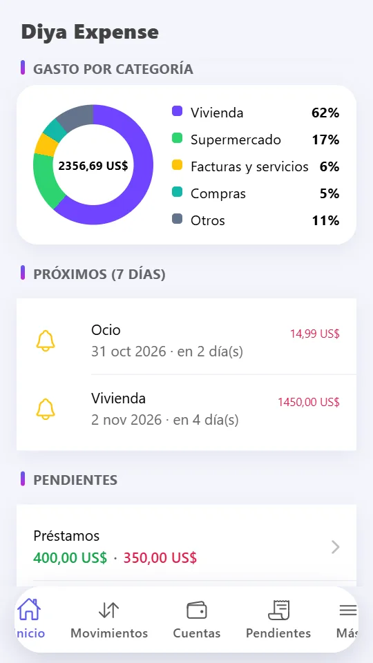
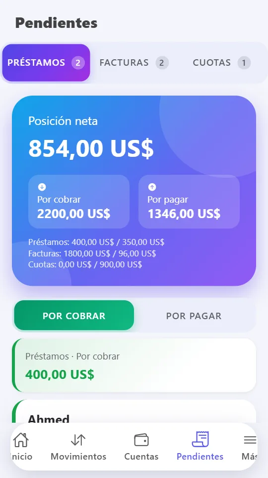
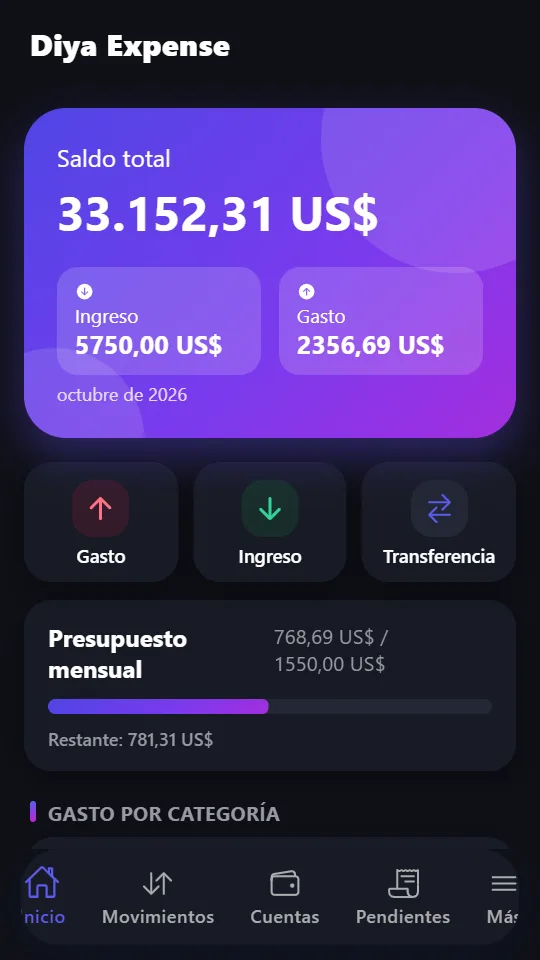

Controla todo
Gastos, ingresos y transferencias en segundos. Cuentas ilimitadas, tus propias categorías, #etiquetas y fotos de recibos.
Control privado de presupuesto y gastos. Funciona sin conexión. Sin cuenta, sin anuncios.
Disponible en Google PlaySin cuenta · Sin anuncios · Tus datos se quedan en tu teléfono
Diya Expense es un gestor de dinero privado que funciona totalmente sin conexión. Registra tus gastos en segundos, sigue tu presupuesto y tus metas de ahorro, controla lo que debes y lo que te deben, y ve con claridad adónde va tu dinero.
Gastos, ingresos y transferencias en segundos. Cuentas ilimitadas, tus propias categorías, #etiquetas y fotos de recibos.
Define un presupuesto mensual por categoría y síguelo en la pantalla de inicio. Crea metas con un importe objetivo y añade fondos poco a poco.
Un gráfico circular de gastos por categoría, la evolución de ingresos y gastos de 6 meses y una previsión de fin de mes.
Sigue el dinero que prestaste o recibiste, las facturas emitidas o recibidas, y divide compras en cuotas programadas.
Alquiler, recibos, suscripciones y salario en piloto automático, con notificaciones locales antes del vencimiento.
Todo se queda en tu dispositivo. Bloqueo con PIN y huella o rostro. Sin seguimiento ni conexión a Internet.
Guarda una copia en un archivo y restáurala en un teléfono nuevo, o exporta todas las transacciones a CSV para Excel y Google Sheets.
Español, inglés, árabe, urdu y francés con compatibilidad total de derecha a izquierda, además de temas claro y oscuro.
No. No hay registro y la aplicación funciona totalmente sin conexión.
Solo en tu teléfono. La aplicación no envía tus datos a ningún servidor. Lee la política de privacidad para más detalles.
Guarda una copia de tus datos en un archivo desde Ajustes, cópiala a tu teléfono nuevo e impórtala allí. También puedes exportar las transacciones a CSV.
Español, inglés, árabe, urdu y francés, con interfaces de derecha a izquierda y temas claro y oscuro.
Sí. Sigue el dinero prestado o recibido, las facturas y las cuotas, con pagos parciales y tu posición neta total.



No hace falta cuenta. Tus datos se quedan en tu teléfono.
Disponible en Google PlayDescarga Diya Expense y toma el control de tu dinero hoy mismo.